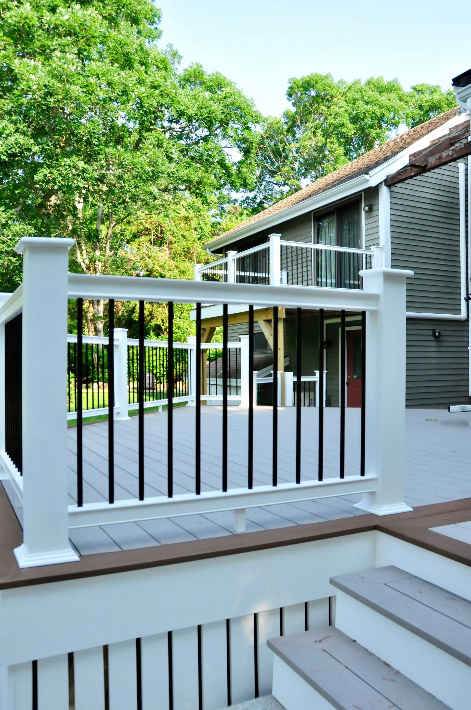

Custom homes
From early planning and site work through framing, exterior systems, interior finishes, inspections, and final walkthrough.
Explore custom constructionFalmouth, Massachusetts
Custom homes, thoughtful additions, and full-scale remodeling in Falmouth—planned for your property, your family, and the realities of coastal New England construction.
Local experience matters
A home here has to do more than look right. It needs to work with the site, meet local requirements, and stand up to salt air, coastal moisture, wind-driven rain, and changing seasons.
DC Builders has worked on Cape Cod for more than 40 years. Owner Dave Cleary stays involved from the first conversation through the final walkthrough, giving homeowners one experienced point of accountability throughout the job.

Residential construction services
Whether you are starting with land, reworking an existing home, or creating more room for family, the job is managed as one connected construction process.
From early planning and site work through framing, exterior systems, interior finishes, inspections, and final walkthrough.
Explore custom constructionPrimary suites, family rooms, garages, in-law space, and larger expansions designed to fit the existing home.
Explore home additionsCoordinated renovations that improve flow, systems, comfort, durability, and the way the home supports daily life.
Explore remodelingFunctional, well-built spaces with coordinated cabinetry, surfaces, fixtures, tile, lighting, and finish work.
See renovation servicesRoofing, siding, windows, decks, porches, and repairs selected and installed for Cape Cod conditions.
View completed workPractical collaboration between design and construction so the finished home reflects both your goals and the build plan.
Discuss your plansFalmouth service area
DC Builders is based in East Falmouth and serves homeowners throughout Falmouth and nearby Cape Cod communities. Every property is different, so the first step is a conversation about your site and project.
Coastal construction
Good planning accounts for exposure, drainage, material durability, energy performance, maintenance, and the approval path before construction begins. Those choices affect comfort and ownership costs long after the work is complete.
DC Builders helps organize those decisions with the design and construction team, turning a long list of possibilities into a practical scope.
Read our coastal building guideHow the work moves forward
Discuss the property, goals, priorities, budget, and desired timing.
Define scope and coordinate the drawings, selections, pricing, and approvals the project needs.
Manage the schedule, trades, quality control, communication, and work on site.
Finish inspections, cleanup, systems orientation, punch work, and the final walkthrough.

“Owner Dave Cleary is on every job site—from the first sketch to the final nail.”
DC Builders’ approach to project oversightFalmouth building questions
Yes. The team serves homeowners in Falmouth, East Falmouth, West Falmouth, North Falmouth, Woods Hole, Waquoit, Teaticket, and nearby Cape Cod communities.
Yes. DC Builders builds custom homes and completes additions, whole-home renovations, kitchens, bathrooms, decks, roofing, siding, and related residential construction work.
Owner and operator Dave Cleary oversees projects from planning through the final walkthrough and is present on job sites.
Early enough to discuss the property, scope, budget, design work, selections, approvals, and realistic timing before you commit to a construction schedule. A consultation is the right starting point.
Call (508) 388-5120 or use the consultation request form. Bring any survey, plans, inspiration, priorities, and timing information you already have.
Start the conversation
Tell us about your property, priorities, and the home you want to create.